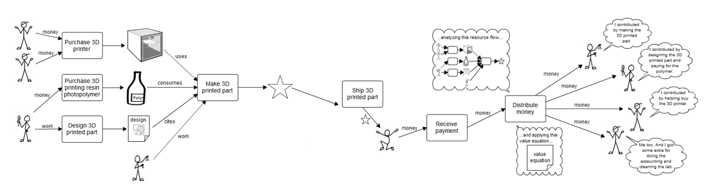
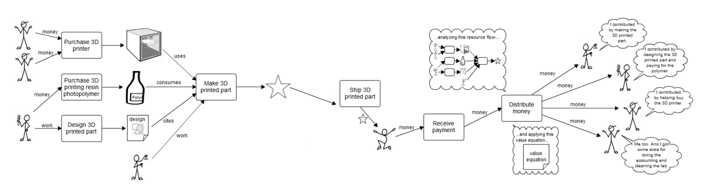

Value Streams are the information streams that flow back and forth from one corner
of a value network to another.
Value Streams are similar to Activity Streams in social networks.
Activity streams are some combination of very popular and occasionally annoying.
Value streams should not be annoying, because they will be about valuable stuff, and
they will help value creators do their work. They will be generated by economic
activities, not "whatever", and follow the patterns of the value network.
If you think of a value network as a river system (although the analogy breaks down
after awhile), upstream toward the source you find the creators of values and
downstream in the delta you find the people who use the values created.
* Tracing all of the resources that went into creating a resource, and all of the other resources that
resource went into,
* recursively, which means the inputs to the inputs to the inputs, and the outputs from the outputs
from the outputs, forever, until the sources or end uses.
* Your work might have been part of those value flows.
* When rewards come back, you will participate in them, according to the value equation.
* Flows of value in which you can participate
** request, offer, create, receive, use, consume, work, contribute, reward and be rewarded
* Tracing all of the resources that went into creating a resource, and all of the other resources
that resource went into, on and on to final product
* Participation in the rewards when they come back, according to the value equation

 


 mikorizal software
mikorizal software